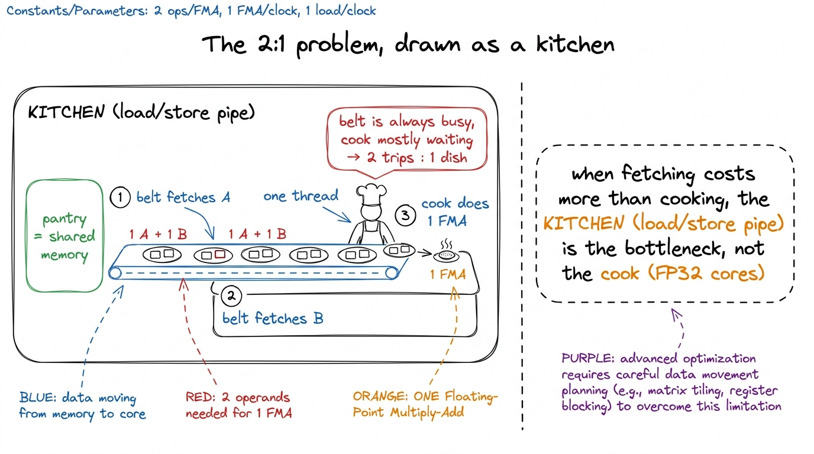
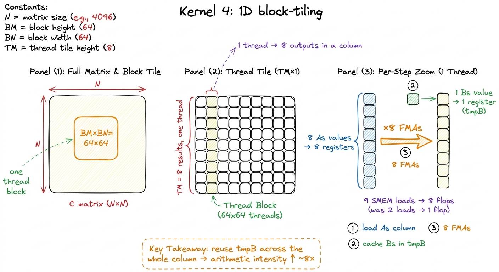
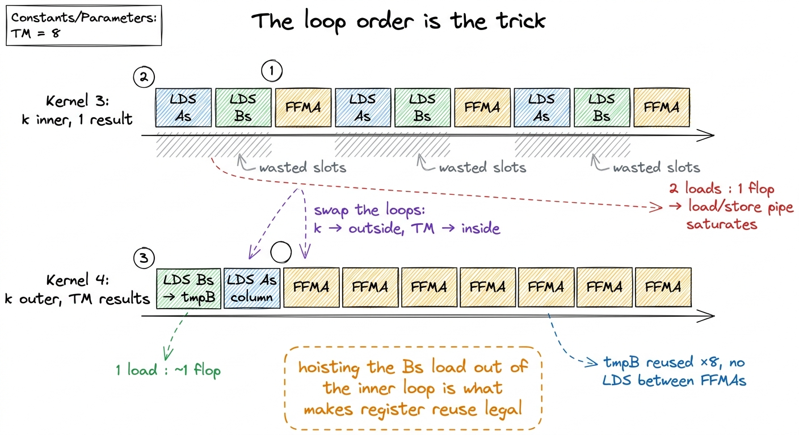
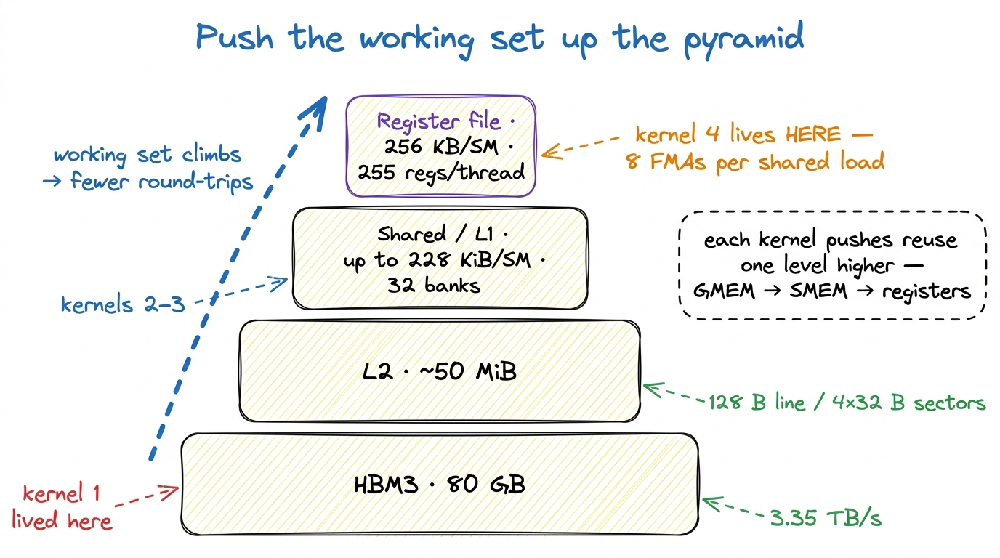

Kernel 4: 1D block-tiling 36.5%
Kernel 3 got us onto the chip. By staging tiles of A and B in shared memory and reusing them across a whole block, we stopped hammering HBM and climbed to 12.8% of cuBLAS. That felt like progress — and then the profiler ruined the celebration. We were no longer bound by global memory, but Nsight Compute showed the warps stalling anyway, this time on the shared-memory pipeline. We had moved the wall a few inches closer to the compute units. That is still a wall.
This is kernel 4 of the ladder, and it is the first one where the trick is not "move data to a faster level of memory" but "do more arithmetic per byte you touch." The lever is register reuse, and it takes us from 12.8% to 36.5% of cuBLAS — the biggest single jump so far.1 This kernel follows Simon Boehm's "How to Optimize a CUDA Matmul Kernel", kernel 4. The tile sizes here — BM = BN = 64, BK = 8, TM = 8 — are his, and they are a reasonable-but-not-tuned starting point; we autotune them properly a few kernels later.
The hypothesis
Go back to what the shared-memory kernel actually costs, counted in memory operations per output element, not per kernel. Each thread still computes exactly one entry of C. To do that it walks the K dimension, and on every step of the inner loop it issues two shared-memory loads — one from sharedA, one from sharedB — to feed a single fused multiply-add. That is a 2:1 ratio of shared loads to flops. Shared memory is fast, but it is not free: those loads go through the same load/store units and the same 32-bank crossbar as everything else, and at one FMA per two loads there simply are not enough flops in flight to hide the traffic. The arithmetic intensity (flops per byte moved, even from SMEM) is too low, so the load/store pipeline saturates and the tensor-free FP32 cores idle.
The fix is a change of shape, not of memory level. Instead of one thread owning one element of C, we make each thread own a small column of TM elements — eight of them, stacked vertically. Here is why that changes the arithmetic. When a thread computes eight results in the same column of C, all eight of them multiply against the same value from sharedB (same column n, same step k) but against eight different values from sharedA (eight different rows m). So the plan is:
- Load the one needed
sharedBvalue into a register once. - Load the eight needed
sharedAvalues into eight registers once. - Do eight FMAs against those registers.
We paid for 1 + 8 = 9 shared-memory loads and got 8 flops out of them — and if we are cleverer about the loop order, we can amortize the sharedB load across the whole column so it barely counts. Either way we have gone from a 2:1 loads-to-flops ratio to roughly 9:8, and the useful flops per shared load have risen by about a factor of eight.2 Counted per result element the shared-memory traffic drops from 2·K SMEM loads to about (9/8)·K, and the global traffic drops from K/16 to K/32 loads — we also load a taller strip of A and B per outer step, which halves the redundant GMEM reads as a bonus.

figure rendering · Kernel 4. Each thread computes a column of TM=8 outputs, caching a colThe code, concept first
The block still loads a BM × BK strip of A and a BK × BN strip of B into shared memory, exactly as in kernel 3 — that part is unchanged. What changes is the compute loop. Each thread now carries an array of TM accumulators in registers, threadResults[TM], and the loop is restructured so the dot-product step (k) is the outer loop and the TM results are the inner loop. That ordering is the whole point: with k on the outside, we load one sharedB value into a register tmpB once per k, then sweep it across all eight results.
// Per thread: TM=8 accumulators live in registers.
float threadResults[TM] = {0.0f};
for (uint k = 0; k < BK; ++k) { // dot-product step (outer)
// one Bs value, reused across the whole column:
float tmpB = Bs[k * BN + threadCol];
for (uint i = 0; i < TM; ++i) { // the TM results (inner)
// eight distinct As values, one per output row:
threadResults[i] += As[(threadRow * TM + i) * BK + k] * tmpB;
}
}
figure rendering · Making k the outer loop lets one Bs load feed a tight, uninterrupted rRead the inner loop carefully: tmpB does not depend on i, so it is hoisted into a register and touched once for eight multiply-adds. The As accesses do depend on i, but they are eight consecutive rows loaded from shared memory into registers, and the compiler keeps the whole As column live in the register file across the inner loop.3 With TM = 8, this costs roughly 8 accumulators plus ~8 staging registers per thread — comfortably inside the H100's budget of 255 registers/thread and the 256 KB register file per SM. Push TM too high and you spill to local memory, which is HBM wearing a disguise; the profiler catches it instantly as a wall of LDL/STL instructions. After both loops finish for all BK steps of every block tile, the thread writes its eight accumulators out to C.
The measurement
The kernel lands at about 8,474 GFLOP/s, which is 36.5% of cuBLAS on the same FP32 problem — nearly a 3× speedup over kernel 3's 12.8%.4 These are the reference numbers from the H100 run; the exact GFLOP/s wobbles a few percent between launches and cards, but the ratio to cuBLAS is stable. 36.5% is the honest figure, not a rounded-up one. For a change that touched only the compute loop and added a register array, that is an enormous return.
The profiler tells us why, and it is exactly the story we hypothesized. In kernel 3, Nsight Compute's warp-state breakdown was dominated by stalls on the shared-memory pipeline — warps sitting idle with the reason Stall MIO Throttle, the load/store unit backed up. In kernel 4 that stall reason collapses. We issue far fewer shared loads per flop, so the load/store queue drains, and the warps spend their cycles actually issuing FMAs instead of waiting to issue the next load.
You can see the same thing in the SASS. Inspecting the inner loop, the eight FFMA instructions that make up one k-step all read the same register operand for tmpB and eight distinct register operands for the As column — no LDS (load-shared) instruction sits between them. The single LDS that fills tmpB has been lifted out to the top of the k-iteration, so eight arithmetic instructions issue back-to-back before the next shared load. That tight FFMA cluster is register reuse made visible: the data the ALU needs is already sitting in the register file, one wire away, instead of a shared-memory round-trip away.

figure rendering · The SASS shows one hoisted LDS feeding eight back-to-back FFMAs — theWhy this generalizes
Step back and notice the pattern, because we are going to run it again. Every rung of this ladder so far has been the same move applied at a different level of the memory hierarchy:
- Kernel 2 fixed coalescing so each global transaction was fully used.
- Kernel 3 staged tiles in shared memory so we stopped re-reading global.
- Kernel 4 stages a column in registers so we stop re-reading shared.
There is a memory pyramid here — HBM at the bottom, then L2, then shared/L1, then the register file at the very top — and the whole game is to push the working set as high up that pyramid as it will go, and then squeeze the maximum number of flops out of it before it comes back down.5 Registers are the top of the pyramid: private to each thread, effectively zero-latency, and the only storage the ALU can read an operand from directly. Everything below them — even shared memory — is a detour. The catch is capacity: 256 KB per SM sounds large until you divide it across up to 2,048 resident threads. Register reuse is that principle applied at the top of the pyramid, and it is the highest-leverage version of it because registers are the fastest storage on the chip.

figure rendering · The ladder is one idea at four levels: stage the working set as high iThe bridge to kernel 5
We tripled our throughput by making one thread do a column of work. The obvious next question writes itself: if reusing sharedB down a column bought us 8× on the A side, why not reuse in both directions at once — have each thread compute a small TM × TN tile of C, so that a loaded As value is reused across TN columns and a loaded Bs value is reused across TM rows? That is 2D block-tiling, and it turns our 9:8 ratio into something far better still.
We are also still leaving performance on the table inside this very kernel: the shared loads that remain are scalar LDS, one 32-bit word at a time, when the hardware can move 128 bits per instruction. The profiler will nag us about both. Kernel 5 takes the 2D-tiling step and lands us at 68.7% of cuBLAS — past the halfway mark to a library NVIDIA has been tuning for fifteen years, still with nothing but arithmetic we derived from a measurement.